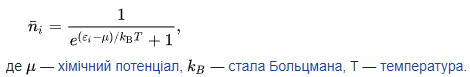

Принцип заборони Паулі забороняє двом ферміонам знаходитися у однаковому квантовому стані (тобто такому, де всі квантові числа збігаються). Через це частинки ферміонного газу не можуть при охолодженні усі зайняти стан з мінімальною енергією, а електрони не можуть усі зайняти енергетично вигідну нижню орбіталь. Якщо газ з ферміонів знаходиться у стані термодинамічної рівноваги, то кількість частинок, що знаходиться у стані з деякою енергією описується рівнянням:
Складності побудови теорії слабкої взаємодії
Античастинки
Усі відомі елементарні ферміони мають частинку-партнера, що має таку саму масу, спін, ізоспін і час життя, але протилежний заряд (а також лептонне або баріонне число, колір і аромат, в залежності від типу частинки). Такі партнери називаються античастинками. Античастинка електрону має власну назву, позитрон, а у для решти ферміонів назви античастинки утворюються за допомогою префіксу анти-: антикварк, антимюон, антинейтрино. Античастинки можуть об'єднуватися, утворюючи більш складні системи, антипротони, антинейтрони, антиатоми, антиматерію.
При зіткненні частинки зі своєю античастинкою, вони обидві зникають, утворюючи фотони або більш важкі частинки. Такий процес називається анігіляцією.
Ферміони, що ідентичні своїм античастинкам називають майоранівськими ферміонами. У такому контексті звичайні ферміони, що відрізняються від своїх античастинок називають ферміонами Дірака. З відкритих частинок єдиним кандидатом у ферміони Майорани є нейтрино. З'ясувати, чи тотожне нейтрино своїй античастинці можна спостереженням рідкісного типу розпаду — безнейтринного подвійного бета-розпаду. Наразі такий розпад не був зафіксований.
На відміну від елементарних ферміонів, всі (або всі, окрім нейтрино) з яких відрізняються від своїх античастинок, більшість елементарних бозонів, такі як фотон, глюон, Z-бозон — тотожні своїм античастинкам. Такі частинки називаються істинно нейтральними частинками[en]. Серед композитних частинок істинно нейтральними є деякі мезони, що складаються з кварка і антикварка однакових типів (наприклад, π0-мезон).
Закони збереження
Наразі в усіх експериментах лептонне число і баріонне число зберігаються. Наприклад, при розпаді мюона утворюється електрон, мюонне нейтрино і електронне антинейтрино. Втім, оскільки питання про тотожність нейтрино і антинейтрино ще не вирішене, у деяких реакціях (безнейтринний подвійний бета-розпад) закон збереження ферміонного числа (F=B+L) може порушуватися.
Варто зазначити, що збереження ферміонного числа не тотожне збереженню кількості ферміонів, якщо розглядати і реакції, у яких беруть участь композитні ферміони. Так, при об'єднанні протона і нейтрона у дейтрон з випроміненням фотону з двох ферміонів утворюється нуль (дейтрон є бозоном).